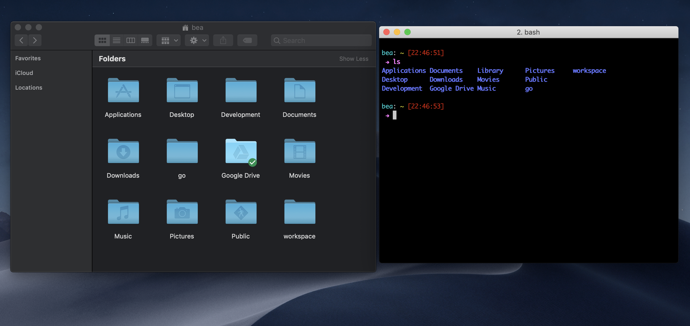

lab 3 All about the command line
Goals
- Understand the command line and what its purpose is
A command line is a text interface for your computer.
- Open finder and open iTerm2 (aka our command line)
- Go to your home directory (normally your name) on Finder
- Now type
lson iTerm2. - You should see the exact same directories (also called “folders”). Your command line is just
a different way to access your computer and run commands!lsis a
command to list the files in the current directory you are in (which happens to be
the home directory)
